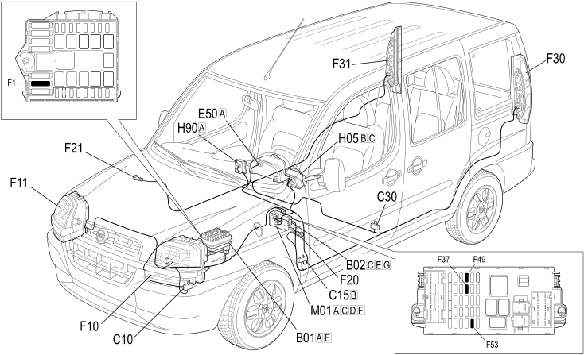

E2020 DIRECTION INDICATORS / HAZARD WARNING LIGHTS - LOCATION OF COMPONENTS
- Path
- Electrical equipment > 1 ELECTRICAL FUNCTIONS > E20 EXTERIOR LIGHTING > E2020 DIRECTION INDICATORS / HAZARD WARNING LIGHTS > E2020 DIRECTION INDICATORS / HAZARD WARNING LIGHTS - LOCATION OF COMPONENTS
- Kind
- topic
- Applies to
- engines: 1.2 8v, 1.6 16v, 1.3 JTD 16V, 1.9 JTD 8V, 1.9 DIESEL; all production periods
- Interactive page
- https://sloeber94.github.io/elrnDB-fDbl/en/#/223001498
Applies to: engines: 1.2 8v, 1.6 16v, 1.3 JTD 16V, 1.9 JTD 8V, 1.9 DIESEL; all production periods
Location of components

COMPONENTS
Component code | Name | Assembly reference |
|---|---|---|
Engine compartment junction unit | - | |
Engine compartment junction unit | ||
Engine compartment junction unit | ||
Junction unit under dashboard | ||
Front left earth | - | |
Facia earth, driver's side | - | |
Left rear earth | - | |
Earth on engine | - | |
Instrument panel | - | |
Instrument panel | ||
Left headlamp | ||
Right headlamp | ||
Left side repeater | ||
Right side repeater | ||
Rear left light cluster | ||
Rear right light cluster | ||
Stalk unit | ||
Steering column switch unit | - | |
Switch control unit | ||
Body computer | - | |
Body computer |
Topics linked from this page (23)
- 1004B POWER UNIT ASSEMBLY
- 5505A multi-function components
- 5540A lighting
- 5540B headlamps
- 5550A stalk unit
- 5550C turn signal/hazard warning lights
- 5560B analogue control panel
- B001 JUNCTION UNIT
- B002 JUNCTION UNIT UNDER DASHBOARD
- C010 LEFT FRONT EARTH
- C015 DASHBOARD EARTH, DRIVER'S SIDE
- C30 LEFT REAR EARTH ( REAR )
- C040 ENGINE EARTH
- E050 INSTRUMENT PANEL
- F010 LEFT HEADLAMP
- F011 RIGHT HEADLAMP
- F20 LEFT SIDE REPEATER ( REAR )
- F21 RIGHT SIDE REPEATER ( REAR )
- F30 REAR LEFT LIGHT CLUSTER ( REAR )
- F31 REAR RIGHT LIGHT CLUSTER ( REAR )
- H005 STEERING COLUMN SWITCH UNIT
- H090 SWITCH CONTROL UNIT
- M001 BODY COMPUTER